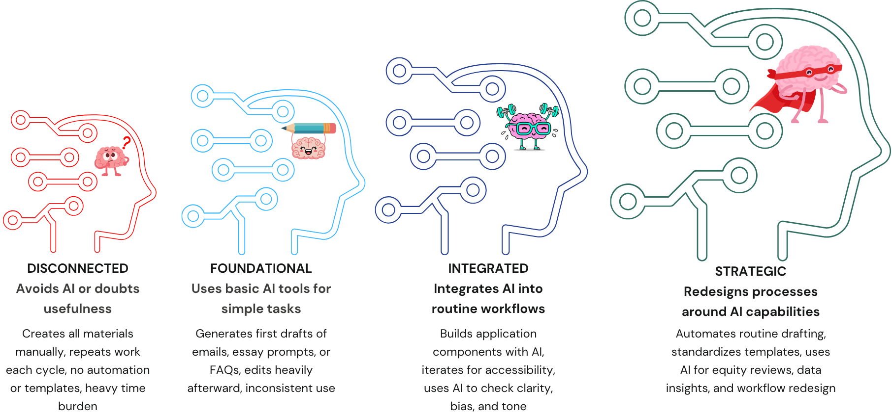

Scholarship Provider AI Fluency Self-Assessment
Choose the option that best matches your current practice. When you are done,
select “Calculate My Level” to see your score and fluency level.
Your AI Fluency Result
Disconnected
5 to 8
Creates all materials manually, repeats work each cycle, and uses no automation or templates.
Foundational
9 to 12
Uses basic AI tools for simple tasks and quick drafts. Application is inconsistent.
Integrated
13 to 16
Integrates AI into routine workflows, builds application components with AI, and iterates for accessibility, clarity, and tone.
Strategic
17 to 20
Redesigns processes around AI, automates drafting, standardizes templates, and uses AI for equity reviews and data insights.